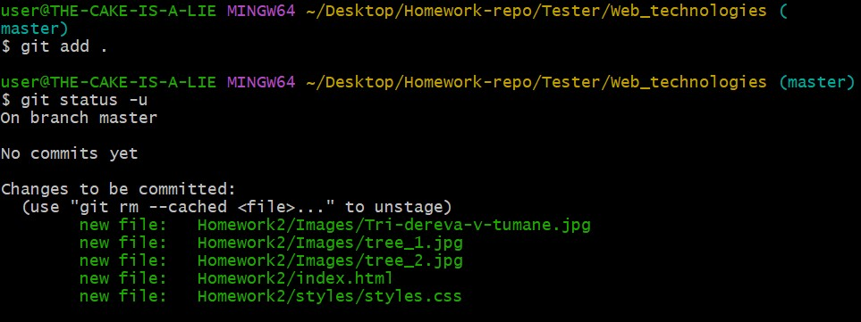
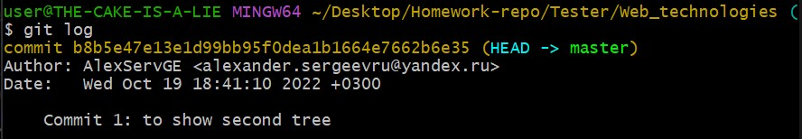

Хотели узнать как работает git reset?
Чем отличаются команды git reset --soft, git reset --mixed, git reset --hard?
Или все же проверить мою домашнюю работу по курсу веб-технологии?
Тогда прошу ознакомиться со следующим содержимым данной страницы.
Первое дерево, которое мы рассмотрим, — рабочий каталог. Это дерево синхронизировано с локальной файловой системой
и
отображает непосредственные изменения, внесенные в содержимое файлов и каталогов.
В данный момент эти изменения являются частью первого дерева — рабочего каталога. Для отображения изменений в рабочем каталоге можно использовать команду git status. Измененные файлы будут отображаться красным цветом с префиксом «modified»
Если мы ранее вносили указанные файлы в коммит, то мы можем вызвать команду git ls-files -s, чтобы увидеть их хэши, по которым они в данный момент распознаются в следующем дереве - разделе проиндексированных файлов. В истории коммитов хранятся собственные SHA объектов для идентификации указателей на коммиты и ссылки, а в разделе проиндексированных файлов есть свои SHA объектов для отслеживания версий файлов в индексе. Обратите внимание на файл index.html - его хэш b108e3491a9b76999366a80620af01b64c3277ea . Это нам понадобится в дальнейшем.
Второе дерево — раздел проиндексированных файлов. Это дерево отслеживает изменения рабочего каталога, которые были добавлены с помощью команды git add (они добавляеются во второе дерево только после выполнения git add), для сохранения в следующем коммите.
Здесь мы вызываем команду git add ., которая добавляет файлы в раздел проиндексированных файлов. Теперь при вызове команды git status файлы отображаются зеленым цветом, как изменение, подлежащее коммиту («Changes to be committed»). Важно отметить, что команда git status не отображает истинное представление раздела проиндексированных файлов. Вывод git status отображает различия между историей коммитов и разделом проиндексированных файлов. Давайте рассмотрим содержимое раздела проиндексированных файлов на данный момент.
Видно, что SHA объекта для файла reset_lifecycle_file изменился с b108e3491a9b76999366a80620af01b64c3277ea на 29dcce3ecd5fc24561cdecdc3b4fc0c18837f31a.
Последнее дерево — история коммитов. Команда git commit добавляет изменения в постоянный снимок, который находится в истории коммитов. Этот снимок также включает состояние раздела проиндексированных файлов на момент выполнения коммита (второе дерево).
Помимо обновления указателей на коммит, команда git reset изменяет состояние трех деревьев. Аргументы командной строки --soft, --mixed и --hard определяют, каким образом необходимо изменить деревья раздела проиндексированных файлов и рабочего каталога.